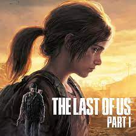
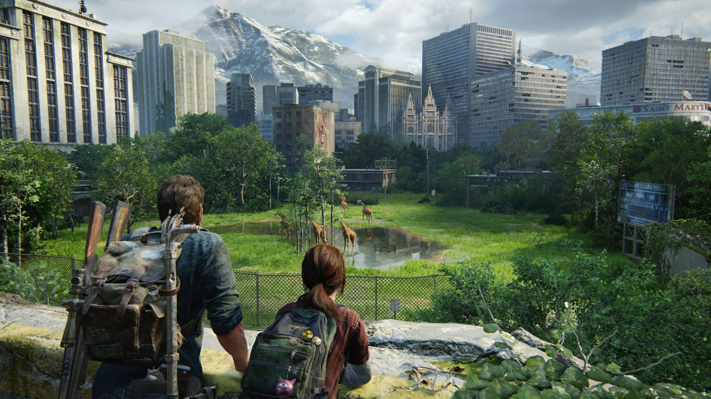
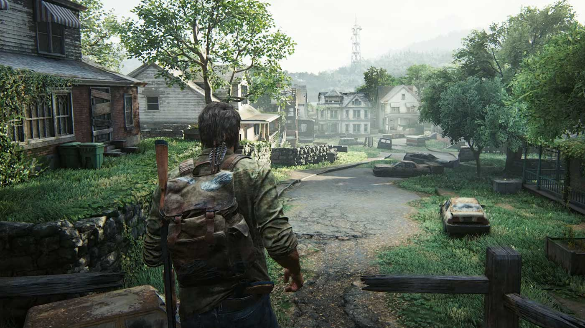
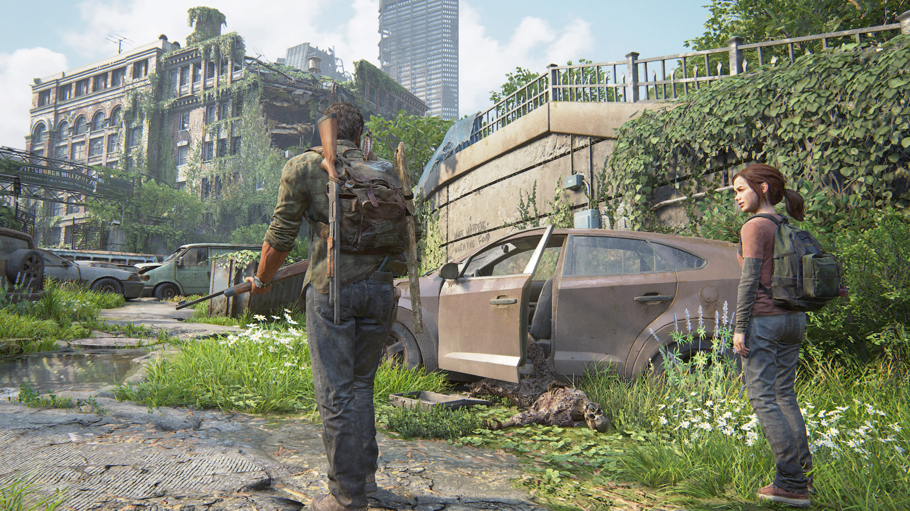

The Last of Us, Naughty Dog tarafından geliştirilen, aksiyon-macera ve hayatta kalma-korku türlerindeki, Sony Computer Entertainment tarafından yalnızca PlayStation 3 için yayımlanan video oyunudur. 10 Aralık 2011'deki Spike Video Oyunu Ödülleri sırasında duyurusu yapılan oyun; dünya çapında 14 Haziran 2013'te, Japonya'da 20 Haziran 2013'te satışa sunulmuştur.

Oyun; tüm dünyayı saran ve bulaşanları birkaç saat içerisinde insanlara saldıran yaratıklara dönüştüren salgın bir hastalığın başlamasından yirmi yıl sonrasını, 2033 yılını konu alır. Hastalık sebebiyle medeniyet büyük ölçüde mahvolmuş ve farklı gruplar hâlinde yaşamak zorunda kalan insanlar, hayatta kalabilmek için birbirleri ve hastalıklılara karşı mücadele etmek zorunda kalmıştır. Bu kıyamet sonrası ortamdaki Amerika Birleşik Devletleri'nde geçen oyun, orta yaşlardaki erkek karakter Joel'un (Troy Baker'ın seslendirmesi ve canlandırması ile), hastalığa karşı bağışıklığı olan genç kız Ellie'yi (Ashley Johnson'ın seslendirmesi ve canlandırması ile) Ateşböcekleri adlı ayrılıkçı bir gruba ulaştırması sırasında ikilinin başından geçenleri konu alır. Oyunun büyük bir kısmında Joel, oyuncular tarafından kontrol edilir ve karşılaşılan çeşitli zorlukların üstesinden gelmeye çalışır.

Oyunun geliştirilmesine 2009'da, Naughty Dog'un geliştirdiği bir önceki oyun olan Uncharted 2: Among Thieves'in yayımlanması sonrasında başlandı ve duyurusu Aralık 2011'de gerçekleştirildi. Özellikle karakterizasyon, alt metin, insanlık durumunun araştırılması ve kadın karakterlerin tasvirine yönelik olarak birçok yorumcudan övgü topladı. The Last of Us, ilk haftasında 1,3 milyonun üzerinde, on dört ay içinde 8 milyondan fazla satarak en çok satan PlayStation 3 oyunlarından biri haline geldi. Çeşitli oyun yayınları, eleştirmenler ve oyun ödül törenleri tarafından Yılın Oyunu ödülleri de dahil olmak üzere çeşitli ödüller kazandı. Oyunun piyasaya sürülmesinin ardından Naughty Dog, birkaç indirilebilir içerik yayımladı. Ellie ile en iyi arkadaşı Riley'nin yer aldığı The Last of Us: Left Behind, konusu ana hikâye öncesi ve sırasında geçen yeni bir tek oyunculu kısmı oyuna eklemişti. PlayStation 4 için düzenlenen ve The Last of Us Remastered adını taşıyan sürüm ise ilk olarak Temmuz 2014'te yayımlandı.

Oyun; soluma veya sıvı aktarımı yoluyla aktarılan sporlar aracılığıyla yayılan ve Eylül 2013'te patlak vermesinin ardından tüm dünyayı etkileyen bulaşıcı bir hastalığın yayılmaya başlamasından yirmi yıl sonrasında, Amerika Birleşik Devletleri'nde geçer. Bu hastalık, bulaştığı kişinin beynini birkaç saat içerisinde etkilemekte ve onu, bir ısırığıyla karşısındakini öldürebilme kapasitesine sahip olan bir yaratığa dönüştürmektedir. Enfeksiyona uğramış olanlar ve hayatta kalan insanlar olmak üzere ikiye bölünen dünya nüfusu, iki grup arasındaki mücadele sebebiyle büyük bir azalma göstermiştir. Hastalık sebebiyle medeniyetin büyük bir kısmı mahvolmuş olduğundan hayatta kalan insanlar, askerler tarafından korunan karantina bölgelerinde veya bu alanların dışında farklı gruplar hâlinde yaşamlarını sürdürmektedir.
x